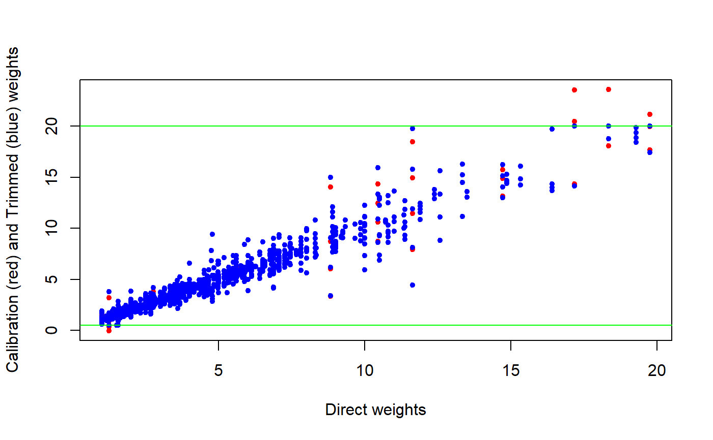

trimcal.RdThis function trims calibration weights to a bounded interval, while preserving all the calibration constraints.
trimcal(cal.design, w.range = c(-Inf, Inf), maxit = 50, epsilon = 1e-07, force = TRUE)
| cal.design | Object of class |
|---|---|
| w.range | The interval to which trimmed calibration weights must be bound (see ‘Details’).
The default is |
| maxit | The same as in function |
| epsilon | The same as in function |
| force | The same as in function |
Extreme calibration weights might determine unstable estimates and inflate sampling error estimates. To avoid this risk, extreme weights may be trimmed by using some suitable procedure (see e.g. [Potter 90], [Valliant, Dever, Kreuter 13]). Despite no rigorous justifications exist for any proposed trimming method, sometimes practitioners are (or feel) compelled to apply a trimming step before estimation. This happens more frequently when interest variables are highly skewed at the population level, like in business surveys or in social surveys with a focus on economic variables (e.g. income, see [Verma, Betti, Ghellini 07], [EUROSTAT 16]).
Unfortunately, the most common trimming techniques do not preserve the calibration constraints: if the input weights to the trimming algorithm are calibrated, typically the trimmed weights will not reproduce the calibration totals. As a consequence, users have to calibrate again the weights after trimming and iterate through the trimming and calibration steps, until a set of weights is obtained that respects both the trimming bounds and the calibration controls.
Function trimcal overcomes this limitation: it allows to trim calibration weights to a specific interval while simultaneously preserving all the calibration totals. To achieve this result, a constrained trimming algorithm is used, which is similar in spirit to the GEM (Generalized Exponential Method) of [Folsom, Singh 2000], but adopts the range restricted euclidean distance - instead of the logit - for numerical stability considerations.
When w.range is passed, both the trimming limits it defines must be positive. In other words, all calibration weights have to be positive after trimming. The purpose of this condition is to enable sound variance estimation on the trimmed object (see also below).
Note that trimcal is allowed to trim only already calibrated weights, i.e. the input object cal.design must be of class cal.analytic. This is a deliberate design choice, as trimming design (or initial) weights is methodologically unsound.
Note also that, in case the original calibration weights were asked to be constant within clusters selected at a given sampling stage (via argument aggregate.stage of e.calibrate), trimcal will preserve that property (see ‘Examples’).
Note lastly that trimcal will not trim further weights that have just been trimmed. This is again a deliberate design choice, devised to discourage over-trimming and cosmetic adjustments of the survey weights. Of course, it is instead entirely legitimate to calibrate again a trimmed object: after that, a further trimming step will be allowed.
From a variance estimation perspective, the trimmed object returned by function trimcal is treated as an ordinary calibrated object. More precisely, the trimming step is regarded as a “finalization” of the weight adjustment procedure which generated cal.design, i.e. as a completion of the previous calibration step. Call w, w.cal and w.cal.trim the starting weights, the calibrated weights of cal.design and the trimmed calibration weights as computed by function trimcal, respectively. Variance estimates computed on the trimmed object will pretend that one passed from w to w.cal.trim directly (w -> w.cal.trim), rather then in two steps (w -> w.cal -> w.cal.trim). Note incidentally that function get.residuals, when invoked on a trimmed object, will behave consistently with the variance estimation approach documented here.
Function trimcal exploits a constrained trimming algorithm to adjust the calibration weights so that (i) they fall within a bounded interval but (ii) still preserve all the calibration totals. When this task is unfeasible, the algorithm will fail. As a consequence, the adjusted weights returned in the output object will respect the range restrictions set by w.range, but some of the calibration constraints will be broken. Exactly as for function e.calibrate, in order to asses the degree of violation of the calibration constraints introduced by trimming, the user can exploit function check.cal (or, equivalently, the diagnostic data structure ecal.status available in the .GlobalEnv).
A calibrated object of class cal.analytic, storing trimmed calibration weights.
Trimming the calibration weights can result in introducing a bias in calibration estimates. Of course, one must hope that this unknown bias will turn out to be small compared to the unknown gain in precision obtained by trimming. In any case - since the actual effect of trimming weights on the MSE of the estimators is unclear - function trimcal should be used sparingly and carefully.
Potter, F.J. (1990) “A study of procedures to identify and trim extreme sampling weights”. Proceedings of the Survey Research Methods Section, American Statistical Association, pp. 225-230.
Folsom, R.E., Singh, A.C. (2000) “The generalized exponential model for sampling weight calibration for extreme values, nonresponse, and poststratification”. Proceedings of the Section on Survey Research Methods, American Statistical Association, pp. 598-603.
Verma, V., Betti, G., Ghellini, G. (2007) Cross-sectional and longitudinal weighting in a rotational household panel: applications to EU-SILC, Statistics in Transition, 8(1), pp. 5-50.
Valliant, R., Dever, J., Kreuter, F. (2013) “Practical Tools for Designing and Weighting Survey Samples”. Springer-Verlag, New York.
EUROSTAT (2016) “EU statistics on income and living conditions (EU-SILC) methodology - data quality”.
e.calibrate for calibrating survey weights within ReGenesees and check.cal to check if calibration constraints have been fulfilled.
###################### ## Data preparation ## ###################### # Load sbs data: data(sbs) # Build a design object: sbsdes<-e.svydesign(data=sbs,ids=~id,strata=~strata,weights=~weight,fpc=~fpc) # Build a population totals template and fill it with actual known totals: pop<-pop.template(sbsdes, calmodel=~(emp.num+ent):emp.cl:nace.macro-1, ~region) pop <- fill.template(sbs.frame, pop)#> #> # Coherence check between 'universe' and 'template': OK #># Calibrate: sbscal <- e.calibrate(sbsdes, pop) # Have a look at the calibration weights distribution: summary(weights(sbscal))#> Min. 1st Qu. Median Mean 3rd Qu. Max. #> -0.01354 1.00000 1.48804 2.50659 2.66081 23.59199####################### ## Trimming examples ## ####################### ## Example 1 # Now suppose we want to trim these calibration weights to, say, the bounded # interval [0.5, 20]. Let's use our trimcal() function: sbstrim <- trimcal(sbscal, c(0.5, 20)) # Have a look at the trimmed object: sbstrim#> Calibrated, Stratified Independent Unit Sampling Design #> - [664] strata #> - [6909] units #> #> Call: #> 2: trimcal(sbscal, c(0.5, 20)) #> 1: e.calibrate(sbsdes, pop)# Let's first verify that the trimmed calibration weights actually obey the # imposed range restrictions... summary(weights(sbstrim))#> Min. 1st Qu. Median Mean 3rd Qu. Max. #> 0.500 1.000 1.487 2.507 2.661 20.000# ...ok, as it must be. # Second, let's verify that the trimmed object still preserves all the # calibration constraints: check.cal(sbstrim)#> All Calibration Constraints (120) fulfilled (at tolerance level epsilon = 1e-07). #># or, more explicitly: all.equal(aux.estimates(sbscal, template=pop), aux.estimates(sbstrim, template=pop))#> [1] TRUE# ...ok, as it must be. # Let's have a look at the scatterplots of calibrated and trimmed weights: plot(weights(sbsdes), weights(sbscal), pch = 20, col = "red", xlab = "Direct weights", ylab = "Calibration (red) and Trimmed (blue) weights")# Last, compute estimates and estimated sampling errors on the trimmed object # as you would do on ordinary calibrated objects, e.g. # before trimming: svystatTM(sbscal, y = ~va.imp2, by = ~nace.macro, estimator = "Mean")#> nace.macro Mean.va.imp2 SE.Mean.va.imp2 #> Agriculture Agriculture 2229.834 120.42059 #> Industry Industry 2996.084 41.22457 #> Commerce Commerce 5143.270 277.49181 #> Services Services 2605.412 42.17520#> nace.macro Mean.va.imp2 SE.Mean.va.imp2 #> Agriculture Agriculture 2238.453 120.44211 #> Industry Industry 2996.084 41.22457 #> Commerce Commerce 5137.412 276.94888 #> Services Services 2605.412 42.17520## Example 2 # If w.range is too tight, constrained trimming can fail: sbstrim2 <- trimcal(sbscal, c(1, 20))#> Warning: Failed to converge: worst achieved epsilon= 0.0511613108495048 in 51 iterations (variable ent:emp.cl(49,99]:nace.macroAgriculture), see ecal.status.# As a consequence, the trimmed weights will respect the range restrictions... summary(weights(sbstrim2))#> Min. 1st Qu. Median Mean 3rd Qu. Max. #> 1.000 1.000 1.484 2.507 2.657 20.000#> Calibration Constraints missed (at tolerance level epsilon = 1e-07): 2 out of 120 #> - Summary of mismatches: #> #> $return.code #> North Center South #> code 0 1 0 #> #> $fail.diagnostics #> $fail.diagnostics$Center #> Variable Population.Total #> 24 ent:emp.cl(49,99]:nace.macroAgriculture 6 #> 4 emp.num:emp.cl(49,99]:nace.macroAgriculture 375 #> Achieved.Estimate Difference Relative.Difference #> 24 6.358129 0.358129176 5.116131e-02 #> 4 374.994655 -0.005345212 -1.421599e-05 #> #> #>## Example 3 # If calibration weights were asked to be constant within clusters, the same # will hold true for the trimmed calibration weights. # Load household data: data(data.examples) # Define a survey design object: des <- e.svydesign(data=example,ids=~towcod+famcod,strata=~SUPERSTRATUM, weights=~weight) # Calibrate asking that all individuals within any household share the same # calibration weight (re-use an example from ?e.calibrate): descal <- e.calibrate(design=des,df.population=pop04p, calmodel=~x1+x2+x3-1,partition=~regcod,calfun="logit", bounds=bounds,aggregate.stage=2) # Have a look at the calibration weights distribution: summary(weights(descal))#> Min. 1st Qu. Median Mean 3rd Qu. Max. #> 91.34 222.52 314.50 305.82 361.00 931.20# Trim the calibration weights to, say, the bounded interval [150, 850] destrim <- trimcal(descal, c(150, 850)) # Do trimmed calibration weights obey the imposed range restrictions? summary(weights(destrim))#> Min. 1st Qu. Median Mean 3rd Qu. Max. #> 150.0 222.5 314.5 306.4 361.0 850.0# Verify that trimmed weights are still equal within households: any( tapply( weights(destrim), destrim$variables$famcod, function(x) {length(unique(x)) > 1} ) )#> [1] FALSE# FALSE, as it must be. ############################################# ## Allowed and forbidden trimming policies ## ############################################# # Let's illustrate some design restrictions on function trimcal(): # 1) Trimming limits must be both positive: if (FALSE) { trimcal(sbscal, c(-0.05, 18)) } # 2) Trimming design (or direct, or initial) weights is not allowed, you can # only trim calibration weights: if (FALSE) { trimcal(sbsdes, c(1, 18)) } # 3) You cannot trim further weights that have just been trimmed: if (FALSE) { trimcal(sbstrim, c(1, 18)) } # 4) You can calibrate again trimmed weights... pop2<-pop.template(sbsdes, calmodel=~(emp.num+ent):area-1) pop2<-fill.template(sbs.frame,pop2)#> #> # Coherence check between 'universe' and 'template': OK #>#> Min. 1st Qu. Median Mean 3rd Qu. Max. #> -0.2346 1.0157 1.4902 2.5066 2.7079 22.8329# ...after that, a further trimming step is allowed: sbstrim2 <- trimcal(sbscal2, c(0.6, 19)) sbstrim2#> Calibrated, Stratified Independent Unit Sampling Design #> - [664] strata #> - [6909] units #> #> Call: #> 4: trimcal(sbscal2, c(0.6, 19)) #> 3: e.calibrate(sbstrim, pop2) #> 2: trimcal(sbscal, c(0.5, 20)) #> 1: e.calibrate(sbsdes, pop)#> Min. 1st Qu. Median Mean 3rd Qu. Max. #> 0.600 1.016 1.488 2.507 2.710 19.000